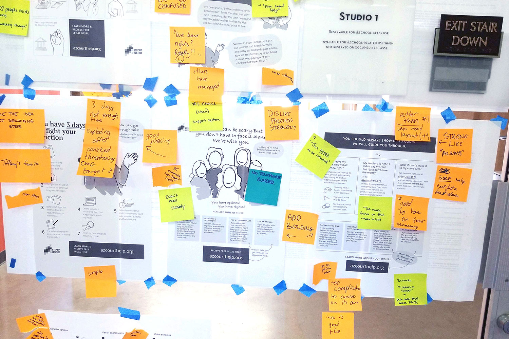
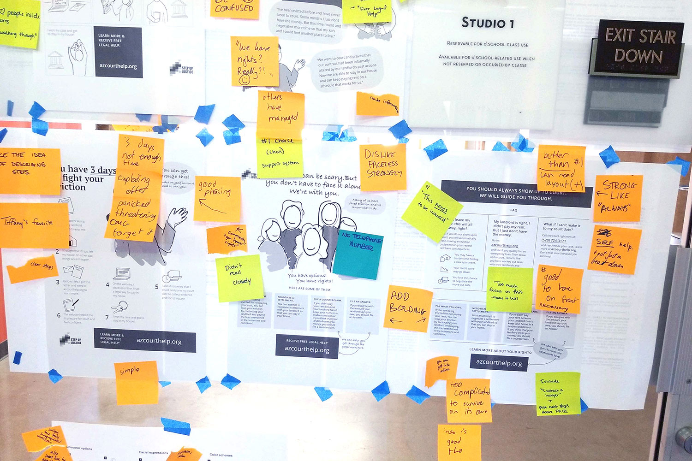

Arizona Eviction Self-Help Guide
2019
Goal
Make housing court accessible to tenants who have been served with eviction notices, so that they know their rights and options and can defend themselves in court
Description
A website & mailer that provide legal information for evictees in the state of Arizona. The website has three main sections: Find Your Case Info, Identify Defenses & Counterclaims, and Create Court Documents. Each section asks the user questions to provide only the information that is relevant to their case while filling out relevant forms that the user can later download.
-
Client
Stanford's Legal Design Lab
via Creative Resilience Collective -
My role
UX/UI Designer & Illustrator
-
UX Advisor
Andrea Ngan
Screens from the main 3 sections of the website: Find Your Case Info, Identify Defenses & Counterclaims, and Create Court Documents
Key Challenge
How do we provide filtered information that is specific to the user without overwhelming them with too many questions?
Solution
We ended up with several solutions to provide the user information no matter how much of the flow they’ve completed. I proposed a persistent collapsible section where, once expanded, users can see an overview of the documents they have started filling out. Users have the option to download those documents before they’ve finished the full flow, as well as blank documents if they don’t want to fill them out online. The Stanford team proposed creating “Basic Guide” PDF’s with all of the general information that can be downloaded right away for people who don’t want to go through the question flow at all.

Illustration for completing a section
Process
Grant Proposal Designs
I worked on the designs below as the visual part of the proposal to try to get grant funding for the project. A few grants were awarded and it eventually grew into a bigger project.
Mailer design versions for the grant proposal
Website design options for the proposal to get a feel for how the content could translate to a website
User-Testing
 

Stanford’s Legal Design Lab organized a user-testing workshop early on in the process. People who have been through the eviction process were brought in to review rough designs and content so that we could get a better idea of what’s most helpful & encouraging.
I tried to compartmentalize as much as possible the different pieces that we were getting feedback on during the user feedback workshop. For instance, the printouts pictured above are wireframe-like rough designs for the mailers. The visuals were intentionally kept rough and sketch-like so that the focus was more on the content and general layout rather than the details of the design. I separately prepared stylistic options for the illustrations, pictured below.
Illustration options we tested. From left to right: different illustration styles, varying level of detail on the face, and color palette options
Wireframing
This project was almost entirely remote, so I often left notes directly in my Sketch files to help elaborate on each screen.
There are 3 sections to the site: getting the user's case information, potential defenses, and filling out documents to e-file or print and physically file. Each section requires getting through a series of questions. We knew it was important to help the user understand which section they're in and how far along they are so that they don't get discouraged. Below are a few early explorations of what that could look like.
Wireframes for different ways to show the user what section they're in and their progress within that section
Early wires/styles for positive feedback to encourage users to continue

Early wireframes for the home page

Current mailer designs
If the user indicates that they would like a translator at their hearing, this screen provides the information needed to request a translator and the option for it to be read aloud
Landing page when a possible defense for the user is determined. Phrasing is important in court, so a script is provided with wording that will be accepted by the judge
UI elements and illustrations
Assortment of screens